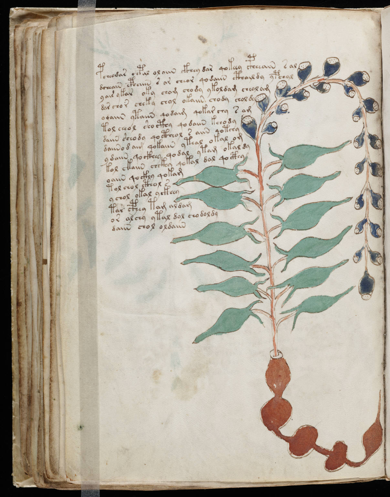

f54v
1pcheodar chpal oloiin ckhey dar qokeey cpheeaiin sal2dcheaiin cphain s ar cheor qodaiin cthaildy ypchal3yair ykar oky cham chody ykoldam cheol aim4dar chor cheky chol okaiin chody chol dy5odaiin ytaiin qodaim qokar chy s am6tol cheol shocthy qodaiin kchody7daiin sheody qoctheol s aiin qotchy8daiino daim qokaiin yteal okal om9ydaiin qockhey qodal ytam okal dy10kol ckaiin chckhy qokal dal qocthy11oaiin qockhy qokam12tol chol cthol s13ychol okal yckhey14tar cthey tam aldam15or alchy ytal dal chodoldy16daiin chol oldaiin
